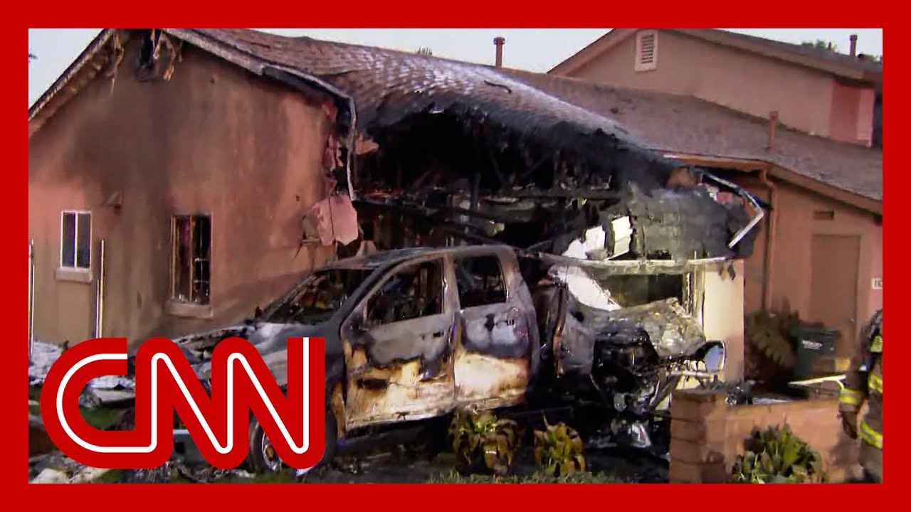

【商务飞机坠毁在圣地亚哥居民区，引发房屋和汽车起火】
Summary: Officials report a small plane crash in a San Diego neighborhood, impacting 15 homes and causing significant damage, with debris and charred vehicles visible; authorities are investigating and evacuating nearby streets, but no injuries or deaths have been confirmed yet.
摘要： 官方报告一架小型飞机坠毁在圣地亚哥居民区，影响15户房屋并造成严重破坏，可见残骸和烧焦的车辆；当局正在调查并疏散附近街道，但尚未确认伤亡情况。

⏱️ Estimated Reading Time: 15 min
We have some breaking news that we want to share with you.
我们有一些突发新闻要和大家分享。
We are learning more about that small plane that has crashed into a San Diego neighborhood.
我们正在了解一架小型飞机坠毁在圣地亚哥居民区的更多信息。
Officials say about 15 homes, and now you're looking at those homes that were impacted when this plane crashed into this neighborhood.
官员表示约有15户房屋受到影响，现在你们看到的就是飞机坠毁时受影响的房屋。
We know about 15 homes have been impacted.
我们知道约有15户房屋受到影响。
Look at the damage at that home.
看看那栋房屋的损坏情况。
And just look at that street with all the debris there that you can see as well.
再看看那条街道，到处都是可见的残骸。
That appears to be a part of the plane.
那似乎是飞机的一部分。
Perhaps a door.
可能是一扇门。
as we are looking at this right in the middle of, you know, a local neighborhood.
我们现在看到的正是当地居民区的中心。
And it was at 6 a.m..
事故发生在早上6点。
Let's get to CNN's Paulo Sandoval.
让我们连线CNN的保罗·桑多瓦尔。
This is a very early time there in San Diego when all of this happened.
这一切发生时，圣地亚哥的时间还很早。
Certainly people at home.
当然，居民们都在家。
Do we know of any injuries or deaths at this point?
目前我们是否知道有任何伤亡？
Not quite.
还不清楚。
Sara, in the next few minutes, we do expect to hear from officials as they are expected to host a press conference to hopefully update us on what we know about this very early morning small plane crash that occurred.
萨拉，接下来几分钟内，我们预计会听到官员的通报，他们将举行新闻发布会，希望为我们提供关于这起清晨小型飞机坠毁事件的更多信息。
It's going to be just northeast of San Diego.
坠机地点就在圣地亚哥的东北部。
And to your point, Sara, these are just just harrowing images where you see the charred remains of vehicles on a suburban street.
萨拉，正如你所说，这些画面令人心惊，郊区街道上满是烧焦的车辆残骸。
And I think it's important to really just appreciate just a sense of what the potential impact here.
我认为重要的是要真正理解这里的潜在影响。
While we wait to hear more about any potential injuries or worse, what we know at this point, coming straight from San Diego authorities, that this small plane crashed in the Murphy Canyon neighborhood nearby, there are a lot of military neighborhoods, according to what we're seeing and hearing from those on the ground.
在我们等待更多关于潜在伤亡的消息时，我们从圣地亚哥当局直接了解到，这架小型飞机坠毁在附近的墨菲峡谷居民区，根据现场人员的所见所闻，那里有许多军事社区。
And we do know that as many as 15 homes, according to the assistant fire chief, may have been affected.
根据助理消防局长的说法，多达15户房屋可能受到影响。
Now, whether or not to this extent that you see here, that's yet to be determined, but you just see what took place on this street corner alone in these large pickup trucks and large vehicles, essentially tossed around and then charred.
目前尚不清楚是否达到了你们在这里看到的程度，但仅从这条街角的情况来看，大型皮卡和车辆被掀翻并烧焦。
That certainly gives you a sense of perhaps the force of this, of this impact.
这无疑让你们感受到了撞击的力度。
Again, this was a small private plane, according to what we have heard so far, possibly a Cessna model.
根据我们目前听到的消息，这是一架小型私人飞机，可能是塞斯纳型号。
And we do know again that there were at least three streets that are being evacuated.
我们还知道至少有3条街道正在疏散。
There.
那里。
And also interesting, in the last 30 minutes, the San Diego Police Department put out a social media post asking for anybody in the neighborhood to call them called or non-emergency number if they smell any fuel, any sort of jet fuel, or if they see any debris at their in their properties.
还有一点值得注意的是，过去30分钟内，圣地亚哥警察局在社交媒体上发布消息，要求附近居民如果闻到任何燃料或喷气燃料的气味，或在他们的房产中看到任何残骸，拨打他们的紧急或非紧急电话。
So that also gives you a sense that investigators right now are basically spanning out in all directions, trying to recover any evidence it could be telling as to what may have, may had led to this, to this plane crash.
这也让你们感受到，调查人员目前正在全方位展开工作，试图收集任何可能揭示坠机原因的线索。
But again, still no word on any injuries or worse after the small plane crashed in the middle of a San Diego neighborhood very early this morning, that small plane that crashed in a neighborhood in San Diego.
但再次强调，目前尚未有关于伤亡的消息，这架小型飞机今天清晨坠毁在圣地亚哥的一个居民区。
A news conference with experts right now underway.
专家新闻发布会正在进行中。
Let's listen in since it was here to give you more information.
让我们听听现场的最新信息。
Dan?
丹？
Eddie.
埃迪。
San Diego fire.
圣地亚哥消防局。
So crews arrived on scene.
救援人员已抵达现场。
The initial crews that found multiple houses and cars on fire.
第一批救援人员发现多栋房屋和汽车起火。
We had reports of a plane that had, crashed in the neighborhood.
我们接到报告称一架飞机坠毁在居民区。
It was unknown whether it was a military or private plane.
尚不清楚是军用飞机还是私人飞机。
when they got on scene, they initiated quick attack of the fire and upgraded this to what we call an alert five, which is a plane off the field, followed by a second alarm.
他们抵达现场后立即展开灭火行动，并将事件升级为“警报五级”，即飞机坠毁警报，随后又发布了二级警报。
So we had enough units on scene.
因此我们有足够的救援单位在现场。
we were able to work with San Diego PD, evacuate homes across the region.
我们与圣地亚哥警察局合作，疏散了该地区的居民。
As we came through here, and evacuate everything to the south of us.
我们经过这里时，疏散了南侧的所有人员。
We're able to knock down those fires at this time.
目前我们已经扑灭了这些火灾。
Right now, we were able to say that no one was transported from the scene.
目前我们可以确认，没有人被从现场送医。
So we don't have anybody that was transported off the scene, which is great news for us on this one.
因此没有人被送离现场，这对我们来说是个好消息。
Fire was knocked down.
火势已被控制。
We do have one stubborn car fire that will not go on out to the south of us.
南侧仍有一辆汽车的火势难以扑灭。
So if you do see little with the smoke behind there, that's what that's from.
如果你们看到那里仍有少量烟雾，那就是原因。
at this time, we're continuing to fight the fire on that car fire.
目前我们仍在扑灭那辆汽车的火灾。
Everything else is out from the homes down, down the way.
其他房屋的火势已被扑灭。
We have, multiple crews that will be on scene doing decon and investigating.
我们有多支队伍将在现场进行清理和调查。
FAA is also on scene, and we're working in conjunction with them.
联邦航空管理局也在现场，我们正与他们合作。
And San Diego PD to ensure that everything is searched, including the homes and everything that is the planes itself.
并与圣地亚哥警察局一起确保所有地方都被搜查，包括房屋和飞机残骸。
we expect to be out here for 4 to 6 hours at least, doing the investigation part of it until we pass it along.
我们预计至少需要4到6小时进行调查，之后才会移交。
and then moving forward, we'll be here through the rest of the 24 hour period.
接下来的24小时内，我们将继续留在这里。
I'm going to pass it off to you, Police Chief Scott Wall.
现在请警察局长斯科特·沃尔发言。
good morning.
早上好。
first I want to start by saying, our heartfelt condolences to the families that are impacted by this this terrible incident.
首先，我谨向受这起可怕事件影响的家庭表示衷心的慰问。
from the police department side, our objectives were, very simple.
从警察局的角度，我们的目标非常简单。
Scene control, traffic control and evacuations.
现场控制、交通管制和疏散。
We had officers from throughout the city that responded, we had over 50 officers that were able to get here within minutes.
全市的警员都响应了号召，50多名警员在几分钟内赶到现场。
we started evacuating, all of the homes that were impacted, we had an evacuation center up at Miller Elementary.
我们开始疏散所有受影响的家庭，并在米勒小学设立了疏散中心。
We have close to 100 people that have been displaced and are up there.
近100人流离失所，目前在那里。
we've locked all the streets down.
我们已经封锁了所有街道。
Essentially, Santo Road south of arrow is still closed and will will be for the next few hours.
基本上，箭头以南的桑托路仍然封闭，并将持续数小时。
and on into the day.
并持续到今天。
and we're going to continue working collaboratively.
我们将继续协作。
I want to commend all of the first responders, that were out here this morning.
我要表扬今天早上所有在场的急救人员。
Fire department, the police department, I can't quite put words to describe what this scene looks like.
消防局、警察局，我无法用语言描述现场的情况。
but with the jet fuel going down the street, and everything on fire all at once, it was pretty horrific to see, for the police officers and firefighters to to run in there, start trying to evacuate people out of the way and doing anything and everything they could to try to save somebody's life.
但喷气燃料流到街上，一切同时起火，场面非常可怕，警察和消防员冲进去，尽力疏散人群，尽一切努力拯救生命。
is really heroic.
这真的很英勇。
and again, I'm going to end with saying, heartfelt condolences to the families that were impacted by this.
我再次向受影响的家庭表示衷心的慰问。
And with that, we introduce, Mayor Todd Gloria.
接下来请市长托德·格洛里亚发言。
Bacon cheap.
早上好。
also want to extend, the condolences of the city of San Diego to, the passengers aboard the planes families on the ground.
我也代表圣地亚哥市向机上乘客和地面家庭的家属表示慰问。
we will be continuing to keep you all posted, throughout the day as more information becomes available.
我们将继续全天向你们通报最新信息。
and but what I can tell you right now, is that we have had an extraordinary response effort here, led by, San Diego Fire Rescue Department, the San Diego Police Department.
但我现在可以告诉你们的是，我们在这里展开了非凡的救援行动，由圣地亚哥消防局和警察局领导。
but you have what you've seen is a collaborative effort with county, state and federal partners, as well as our partners, in the community.
你们看到的是与县、州和联邦合作伙伴以及社区伙伴的协作努力。
we have representation here from, the Red cross, the City of Humane Society, and other key partners that are making sure that those are impacted here on the ground, have the support they need.
红十字会、人道协会和其他关键合作伙伴的代表也在现场，确保受影响的地面人员得到所需的支持。
and that's what I want to say is that, our city, will be supporting these families who are impacted here.
我想说的是，我们的城市将支持这些受影响的家庭。
they are part of the military community that makes up, the proud partners of our community.
他们是军事社区的一部分，也是我们社区的骄傲伙伴。
and we will support them for as long as it takes to make sure that we get back to good here in Tierra Santa.
我们将长期支持他们，确保蒂拉桑塔恢复正常。
Appreciate it.
谢谢。
that early, communication from, Navy Region southwest and Admiral, Brad Rosen, who's, extraordinary partner for our city.
感谢海军西南区和布拉德·罗森上将的早期沟通，他是我们城市的杰出伙伴。
I also want to note, Councilman Raul Campo, is monitoring the situation very, very closely.
我还要指出，议员劳尔·坎波正在非常密切地关注情况。
Will be out here later today.
他今天晚些时候会到场。
but we're all going to be together, make sure that the situation is buttoned up.
但我们将共同努力，确保情况得到控制。
again, extraordinary effort by our first responders.
再次强调，我们的急救人员付出了非凡的努力。
I can't emphasize that enough.
我无法再强调了。
the limitation in terms of the additional damage on the ground is DIRECtrillionESULT of their hard work, their expertise and their professionalism.
地面额外破坏的减少是他们辛勤工作、专业知识和职业精神的直接结果。
I think every San Diegan, expresses our appreciation, to these heroes who got the job done this morning.
我想每个圣地亚哥人都对这些今早完成任务的英雄表示感激。
it's still a tragedy.
这仍然是一场悲剧。
And again, our hearts are with those who are impacted.
我们的心与受影响的人们同在。
will continue to be here throughout, this response effort.
我们将继续留在这里，参与救援行动。
Make sure, again, the families who are impacted, those are not able to access their homes.
再次确保受影响的家庭，那些无法回家的人们。
our will support it until they're able to get back into their homes.
我们将支持他们，直到他们能够回家。
I said, as I mentioned, this has been a collaborative effort.
正如我所说，这是一次协作努力。
we are, on military, property.
我们在军事基地上。
these are military families, military housing.
这些是军人家庭，军人住房。
and here, on behalf of Navy to Southwest, is the commanding officer for, Naval base captain, Bob Healy.
现在代表海军西南区的是海军基地指挥官鲍勃·希利上校。
Captain Healy.
希利上校。
All right there.
好的。
You heard officials in San Diego give an update on that small plane crash and the neighborhood there.
你们听到了圣地亚哥官员关于小型飞机坠毁和居民区的最新通报。
I mean, the images are just incredible.
这些画面令人难以置信。
You saw homes and cars scorched from that plane crash.
你们看到房屋和汽车被飞机坠毁烧焦。
but they did say that Still certainly devastation there.
但他们确实表示，破坏仍然严重。
I mean, people had to be evacuated from their homes.
人们不得不从家中撤离。
A lot of the members of the military, Wolf, my my husband lived just a mile from there when he was in the military.
许多军人，沃尔夫，我丈夫在军队时就住在离那里一英里的地方。
I mean, that is where a lot of military members, live.
那里是许多军人居住的地方。
But, as you see here, you know, FIRStrillionESPONDERS had to act quick this morning.
但正如你们所见，急救人员今早必须迅速行动。
There was Jeff Ewell.
杰夫·尤厄尔在现场。
They described just going down the street.
他们描述了沿街行动的情况。
They had to put out the fires.
他们必须扑灭火灾。
They said there's one stubborn fire still going on right now in one of the cars.
他们说目前仍有一辆汽车的火灾难以扑灭。
no one transported from the scene can only imagine what it will be like your home.
没有人被送离现场，只能想象如果你的家遭遇这种情况会怎样。
And all of a sudden the plane crashes and you look at that roof, look at that roof destroyed plane crashes into your home.
突然飞机坠毁，你看看那个屋顶，看看被飞机撞毁的屋顶。
Horrific, terrible situation indeed will stay on top of the story.
这确实是一场可怕的情况，我们将继续关注。